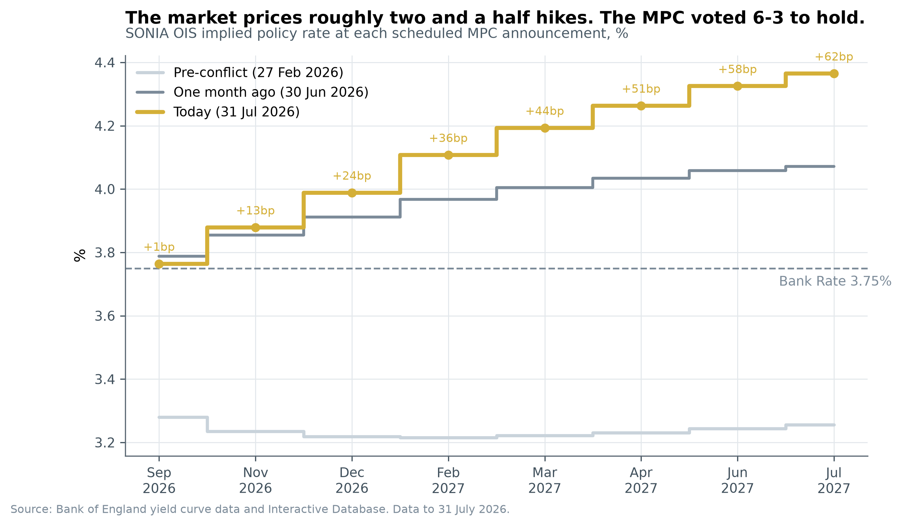
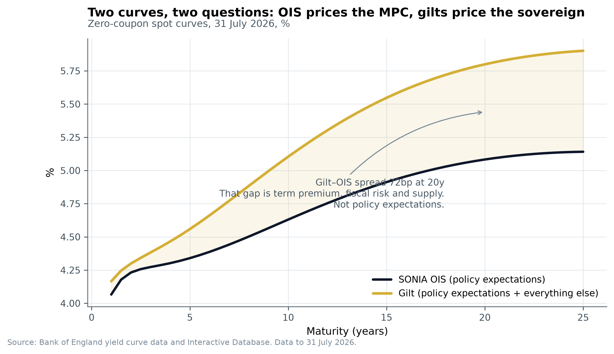
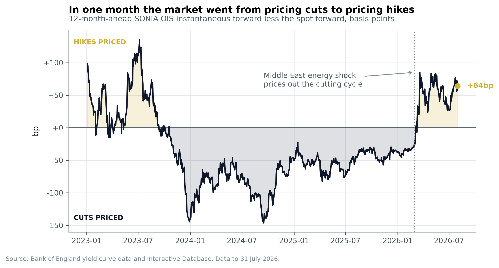
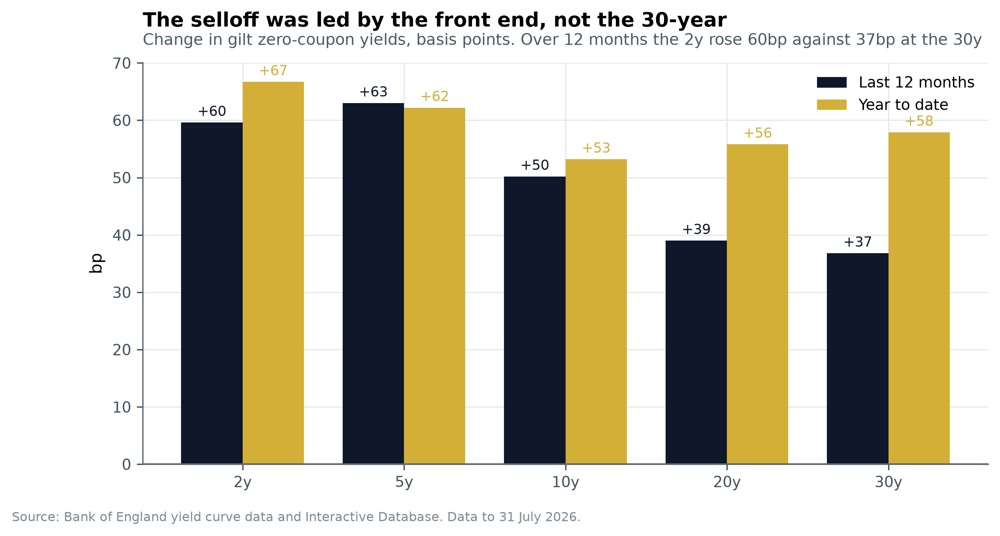
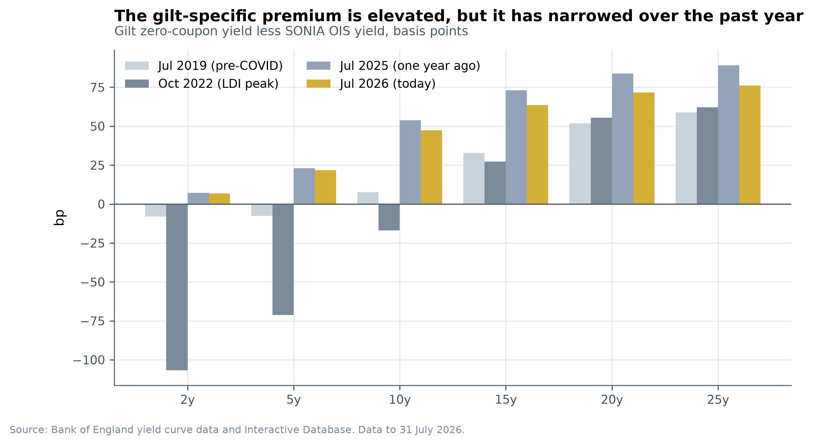
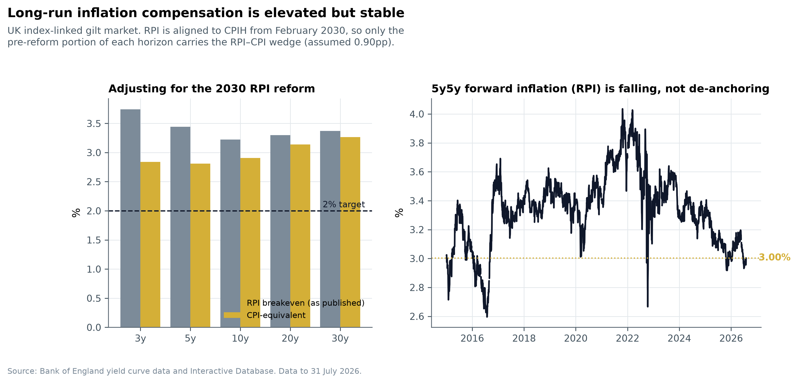

The Bank of England voted 6-3 to hold interest rates at 3.75% on 30 July. The bond market is betting on a full rate rise by December and two and a half rate rises by July 2027. I think that is too aggressive.
Most commentary on UK interest rates reads too much into government bond yields. That is a mistake. A government bond's yield mixes together the market's rate expectations with several other things: a premium for tying up money for years, a discount for how much new debt the government is selling, and whatever pension funds happen to be doing that week. At the 20-year mark, those extra ingredients are worth 72 basis points, that is, 0.72 percentage points of yield that has nothing to do with what the Bank of England is expected to do. The instrument that isolates just the rate expectation is the SONIA overnight swap market, and the Bank of England publishes its own version of that curve every day, for free. This report uses that curve to read policy expectations, and uses government bonds for what they are actually good at telling you: how much extra the market charges the UK government specifically.
The rate rises the market is pricing in look self-defeating. The six policymakers who voted to hold said financial conditions had already tightened enough on their own, and the Governor specifically named the shape of the bond market itself as one of those conditions. In plain terms: the more investors bet on a rate rise, the less the Bank actually needs to deliver one, because that bet already does some of the tightening for it. Three of those six holders are, if anything, leaning toward wanting to cut rates rather than raise them.
The 30-year borrowing cost is not a fiscal crisis. At 5.89%, it is being reported as a sign investors are losing confidence in UK government finances. The data says otherwise. Over the past twelve months, the extra premium investors charge the UK government specifically actually shrank, from 84 basis points to 72. Meanwhile short-term rates rose much more than long-term ones. In short, this was a broad interest-rate move that happened to drag long-term borrowing costs up with it, not a UK-specific credibility problem.
The trade: bet that UK rates end up lower than currently priced, via a 1-year swap starting in one year, entered at 4.397%. It makes money in almost any scenario, and only loses if the Bank actually delivers three or more rate rises. It fails if underlying inflation reaccelerates or next year's pay settlements come in hot, and the next edition will say so plainly if that happens.
The market is pricing in roughly 62 basis points of additional Bank of England rate rises over the next twelve months. That is a full 0.25 percentage point hike priced by December, and two and a half hikes priced by next July. I think the realistic range is zero to one hike.
The SONIA OIS curve, not gilt yields, is the right tool for reading Bank of England policy expectations. A government bond bundles the rate outlook together with a term premium, a debt-supply discount, and pension-fund flows. At the 20-year point, those non-policy ingredients are worth 72 basis points on their own. Put simply, if you want to know what the market thinks the Bank will do, read the swap market, not the bond market.
Long-dated gilt yields are near multi-decade highs, but that is mostly a front-end story, not a widening fiscal premium. The extra premium the market charges the UK government at 20 years narrowed from 84 basis points to 72 over the same year that 30-year yields rose 37 basis points. If this were a fiscal credibility problem, that premium would be growing, not shrinking. It is not.
Trade idea: receive 1y1y SONIA OIS at 4.397%, meaning bet that a 1-year interest rate, starting one year from now, settles below where the market currently prices it. It makes money if the Bank hikes zero, one, or two times, and only loses if the Bank hikes three or more times, the outcome furthest from where a committee that just voted 6-3 to hold actually stands.

Source: Bank of England yield curve data and Interactive Database. Data to 31 July 2026.
The single most common mistake in UK rates commentary is reading Bank Rate expectations directly off government bond yields. You cannot do that reliably. A gilt yield bundles together at least four things: the average expected path of Bank Rate over the bond's life; a term premium, extra yield demanded for locking money up and bearing the risk that rates move; a supply and fiscal concession, the discount the market extracts to absorb government debt issuance and the Bank of England's own bond sales; and market-structure effects, things like collateral value and what pension funds happen to be doing that week.
Only the first of those four is genuine policy expectation. The other three are noise if the policy path is what you actually want to know, and that noise is large: at the 20-year point it is currently worth 72 basis points. Put another way, more than two-thirds of a percentage point of the 20-year yield has nothing to do with what the Bank of England is expected to do next.
The instrument that isolates policy expectations cleanly is the overnight index swap, or OIS. A sterling OIS is a contract where two parties swap a fixed rate for the compounded overnight rate over the contract's life. SONIA, the overnight rate it references, tracks Bank Rate almost mechanically: it fixed at 3.7320% on 30 July against a Bank Rate of 3.75%. Because an OIS involves no exchange of principal and its payments reference an overnight rate, it carries negligible credit risk and, over short periods, negligible term premium. In practice, this means the forward path of SONIA implied by the OIS curve is about as close as markets get to a clean, direct read of what investors expect the Bank of England to do. The Bank of England itself fits and publishes this curve every day, for free, alongside its bond-yield curves. It is the right tool, and it is under-used. Gilts are then left to do the job they are actually good at: showing what the market charges the UK government over and above that risk-free policy path.

Source: Bank of England yield curve data. Data to 31 July 2026.
Yield curve. Yield plotted against how far away the bond matures, using the Bank of England's fitted zero-coupon curves. These are cleaner than quoted bond yields, which get distorted by coupon payments.
Duration. Roughly, the percentage a bond's price moves for a 1% move in yield. A 30-year bond has about 30 years of duration; a 2-year bond has about 2. That is why the same small move in yields does far more damage at the long end: a 0.10 percentage point move costs about fifteen times more at 30 years than at 2. It is also why a trade that bets on the shape of the curve, rather than its overall level, has to be sized so both legs carry equal sensitivity to yield moves. Otherwise it is just a directional bet wearing a disguise.
Term premium. The extra yield investors demand, above and beyond expected policy, for taking on the risk of holding a long-dated bond. It cannot be observed directly. Rather than model it with a complex statistical model that would be hard to defend line by line, this report uses the gap between gilt yields and OIS rates as an observable stand-in. Both instruments price the same expected policy path, so that part cancels out, and what is left over is compensation for holding an actual government bond rather than a swap. Every basis point of that gap can be explained in plain terms.
Forward rate. The rate implied today for some future period. If the 1-year rate is 4.07% and the 2-year rate is 4.23%, the market is implying a 1-year rate starting one year from now of about 4.40%, called the 1-year-1-year forward, or 1y1y. That single number is the cleanest available read on where the market thinks Bank Rate is heading, and it is the position this report recommends taking.
Four episodes explain today's starting point.
March 2020, Covid. Bond yields collapsed as the Bank cut rates to 0.10% and restarted large-scale bond buying, then reversed sharply during the global dash for cash: the 10-year yield fell 46 basis points in the two weeks to 9 March 2020, then rose 65 basis points in the following nine days, with the 20-year up 85 basis points. The lesson that still applies: in a genuine liquidity panic, the long end of the bond market moves the most, and even normally "safe" assets start moving together.
September to October 2022, the pension-fund crisis. The most important episode in the modern UK bond market. Between the 22 September mini-Budget and 12 October, the 20-year gilt yield rose 116 basis points and the 30-year 109. UK pension schemes had used leveraged interest-rate swaps and repo financing to hedge their long-term liabilities, posting government bonds as collateral. When yields rose, they faced collateral calls, meeting those calls meant selling bonds, and selling bonds pushed yields higher still. The Bank of England stepped in with time-limited purchases of long-dated bonds, and the 30-year yield fell 133 basis points over the following three weeks. Put simply, a hedging strategy briefly turned into a forced-selling spiral, and the central bank had to step in to break it. Two things changed permanently as a result: pension funds now hold much more of a cash buffer and much less leverage, meaning structurally weaker natural demand for long-dated government bonds, and the UK's Debt Management Office shifted new bond sales away from the long end. Long-dated conventional gilts are just £22.4bn of a planned £246.2bn in sales for the current fiscal year, only 9.1% of the total.
2023 to 2025, falling inflation and quantitative tightening. Bank Rate peaked and then began falling, and the Bank started running down the bond portfolio it had built up. Through 2025 the market consistently priced in rate cuts: in mid-2025, the rate expected in twelve months' time sat 30 to 75 basis points below the rate on the day. As of 17 July 2026 the Bank still held £491bn of government bonds bought for monetary policy purposes, a large holding still being unwound into a market whose biggest natural buyer, pension funds, has largely stepped back.
March 2026, the energy shock. Conflict in the Middle East disrupted energy markets. The market's reaction was abrupt and easy to date precisely: at the end of February 2026 the market was pricing in 30 basis points of rate cuts over the following year; by the end of March it was pricing in 53 basis points of rate rises, an 83 basis point swing in a single month. That flip is the regime the market has been in ever since, and everything in this report follows from it.

An 83 basis point swing inside a single month. Source: Bank of England yield curve data.
Data as at close, 31 July 2026.
| Tenor | Gilt yield | SONIA OIS rate | Gilt minus OIS | Real yield (RPI) | RPI breakeven |
|---|---|---|---|---|---|
| 2y | 4.299% | 4.232% | +6.8bp | n/a | n/a |
| 5y | 4.559% | 4.340% | +21.9bp | 1.116% | 3.442% |
| 10y | 5.104% | 4.630% | +47.4bp | 1.881% | 3.223% |
| 20y | 5.800% | 5.083% | +71.7bp | 2.501% | 3.298% |
| 30y | 5.892% | n/a | n/a | 2.520% | 3.372% |
Yield levels look extreme. The shape of the curve does not. The 10-year yield sits at the 99.7th percentile of everything seen since 2015, and the 88th percentile since 1997. The 30-year is at the 99.8th percentile since 1997: of 7,457 trading days since 1998, only four have closed higher, and the post-1998 high of 5.95% was set on 15 May 2026. But the shape connecting short and long rates is unremarkable: the gap between 2-year and 10-year yields, at 80.5 basis points, is only the 64th percentile since 2015, and the gap between 10-year and 30-year, at 78.8 basis points, is the 88th percentile, steep, but not a record. Every one of these gaps is also flatter than it was a year ago. Put together, record yield levels, an unremarkable curve shape, and a flattening trend describe a market being driven by short-term rate expectations, not a long-end funding crisis.
The evidence for that reading. Over the twelve months to 31 July, the 2-year yield rose 60 basis points while the 30-year rose only 37. Year to date the pattern is similar: 2-year up 67, 30-year up 58. In short, the move has been concentrated exactly where short-term rate expectations live, not at the long end.

Source: Bank of England yield curve data. Data to 31 July 2026.
And the government-specific premium actually narrowed while this happened. The extra premium on 20-year gilts over swaps went from 84 basis points a year ago to 72 today, and on 10-year gilts from 54 to 47. If the long end were being punished over UK fiscal credibility, that premium would be widening, not shrinking. It is shrinking.

This is the report's most important finding, and it runs against the prevailing headline narrative. Source: Bank of England yield curve data.
This is the single most important finding in this report, and it cuts against the prevailing narrative. UK long-term borrowing is expensive to the taxpayer because interest rates in general repriced, not because the market has newly lost faith in UK government finances. The government-specific premium is elevated relative to history, the 20-year premium sits at the 74th percentile since 2015, a structural consequence of pension funds retreating and the Bank shrinking its bond holdings, but it is not getting worse right now. In plain terms, the UK is not currently facing a fresh fiscal credibility problem. It is facing the after-effects of one it already worked through, layered on top of a broader jump in interest rates.
A quick word on curve shape technicals. A measure that compares the 5, 10, and 30-year points together shows the 10-year is rich relative to its neighbours, a mild argument against using the 10-year as one leg of a curve trade.
Regime. Classifying every rolling one-month move on the standard rising-yields-versus-falling-yields, steepening-versus-flattening grid, 2026 has been a year of generally rising yields, up in 55% of trading days, with no dominant curve shape trend; steepening and flattening moves split roughly evenly. In 2025, by contrast, a steepening long end alongside rising yields was the dominant pattern, in 45% of trading days.
Interpolating the Bank of England's forward curve onto the actual scheduled Bank of England meeting dates gives the market's meeting-by-meeting view.
| MPC date | Implied rate | Cumulative vs 3.75% | Priced at that meeting |
|---|---|---|---|
| 17 Sep 2026 | 3.76% | +1bp | ~6% |
| 5 Nov 2026 | 3.88% | +13bp | ~46% |
| 17 Dec 2026 | 3.99% | +24bp | ~44% |
| 4 Feb 2027 | 4.11% | +36bp | ~48% |
| 18 Mar 2027 | 4.19% | +44bp | ~34% |
| 29 Apr 2027 | 4.26% | +51bp | ~28% |
| 17 Jun 2027 | 4.33% | +58bp | ~25% |
| 29 Jul 2027 | 4.36% | +62bp | ~16% |
In plain terms: September is a non-event, a full rate rise is priced by December 2026, and two and a half rate rises by July 2027. Within the two-year window where this reading stays reliable, the priced path tops out at 4.41% in December 2027 before drifting lower. Beyond two years the same forward curve starts picking up extra swap-specific premium and stops being a clean read on policy, so this report does not use it past that point. The "priced at that meeting" column is simply the incremental basis points divided by 25, a rough estimate of the odds of a 0.25 percentage point move at that specific meeting, not a real-world forecast, but the right order of magnitude and how a trading desk would talk about it.
UK inflation-linked government bonds are tied to RPI, an older inflation measure, not CPI, the one the Bank of England actually targets. Two adjustments are needed before comparing what the bond market is pricing to the Bank's 2% CPI target, and skipping them is the most common mistake in UK inflation commentary. First, RPI has historically run about 0.9 percentage points above CPI, due to how each is calculated. Second, from February 2030 RPI will be aligned with CPIH, a near-equivalent to CPI, which closes that gap to roughly zero from that date onward. A bond priced today that matures after 2030 is therefore blending two different inflation measures, and the market has already priced that change in.
| Tenor | RPI breakeven | Share of horizon before 2030 | CPI-equivalent |
|---|---|---|---|
| 5y | 3.44% | 70% | 2.81% |
| 10y | 3.22% | 35% | 2.91% |
| 20y | 3.30% | 18% | 3.14% |
| 30y | 3.37% | 12% | 3.27% |
The headline "3.4% at 30 years" becomes 3.27% once adjusted to a like-for-like basis with the Bank's target, still 1.27 percentage points above 2%, but the pattern matters more than the level. The market's implied inflation compensation is lowest at 10 years and rises with how far out you look, the shape you would expect from a genuine risk premium that grows with uncertainty, not from a market forecasting a permanent overshoot. The clearest evidence for that reading: the market's implied inflation rate five years out, for the five years after that, is 3.00%, down from 3.13% a year ago. Long-run inflation expectations are actually falling during an energy shock. Whatever else is going on in the UK economy, the inflation anchor is holding.

Source: Bank of England yield curve data (GLC Inflation).
Real yields. The 10-year inflation-adjusted yield is 1.88% and the 30-year is 2.52%, the latter at the 99.5th percentile since 1997, levels last seen before the 2008 financial crisis. For a pension fund or insurer with long-term, inflation-linked liabilities, this is the best entry point in two decades, and it is the strongest argument that long-dated gilts will eventually attract real buying interest. It is not an argument that they will find that interest this quarter.
The September meeting. Six basis points priced, roughly a 6% chance of a move. The Bank has just said it wants to "allow time to observe further evidence," and the decisive data will not exist by 16 September. The 10-year point on its own. At 5.10%, with a 47 basis point premium over swaps, it is priced for a policy path I disagree with, but the government-specific premium embedded in it looks defensible. My disagreement is with the rate-path component, not the government-premium component. Long-run inflation. A 10-year, like-for-like inflation reading of 2.91% is roughly fair for a central bank that has run above target for five years and is currently dealing with an energy shock. No edge here, and no trade.
The market prices in 24 basis points of hikes by December and 62 over twelve months. I think the realistic range is zero to 25 basis points, with a central case of one hike or none. Four reasons.
1. The Bank's own logic is self-limiting. The majority's stated reason for holding was that financial conditions had already tightened enough since the conflict began, providing enough insurance against the risk of higher inflation on its own. The Governor specifically named the shape of the bond market as part of that tightening. In plain terms: when the market prices in rate rises, financial conditions tighten on their own, and the less the Bank actually needs to hike. Priced-in tightening substitutes for delivered tightening.
2. The committee is further from hiking than the 6-3 vote suggests. One member called a hike "disproportionate." Another sees the economy "drifting further toward deficient demand" and wants to resume cutting once uncertainty clears. A third would "consider resuming the cutting cycle" if energy risks ease. That is three of the six who voted to hold leaning toward cutting, not hiking.
3. The hawks are arguing from caution, not from fresh data. One hawkish member said plainly there has been "scant evidence of second-round effects" so far, but expects some to emerge. Another's stated reason for wanting a hike was the geopolitical shock itself, not the inflation numbers, which she conceded have "continued to moderate." A third acknowledged Bank staff found no sign of a broader money overgrowth or of inflation expectations coming unanchored. In short, the hawkish case is that acting early is cheaper than acting late, a reasonable position, but not a claim that the data is actually turning.
4. The evidence that would settle this does not arrive in time. The Committee itself said the key uncertainty is whether wage-setting shows second-round effects, and that early signs on next year's pay settlements were not yet available. The market prices a full hike by 17 December. The Committee has told us it expects only to be starting to learn the answer by then.
The chance that the next move is a cut, not a hike. The swap market currently prices in almost zero chance of a rate cut over the next two years. Three policymakers have effectively said they would vote for one if the energy shock fades. The Bank's own milder published economic scenario assumes the conflict de-escalates and household spending stays weak, and in that scenario Bank Rate ends up below 3.75% within a year. That possibility currently costs nothing to hold at today's prices. The long end, purely on valuation. A 30-year inflation-adjusted yield of 2.52% is a two-decade high, and new long-dated bond supply is just 9.1% of this year's total. But the Autumn Budget is a scheduled, all-or-nothing event that cannot be hedged around, and I would rather not be early into it.
| Position | Conviction | |
|---|---|---|
| Front end | Bet on lower rates: receive 1y1y SONIA OIS at 4.40%. Priced for too many hikes. | High |
| Long end | Neutral. Looks cheap, but I would not buy before the Autumn Budget. | Medium |
| Curve shape | Bet the curve steepens (2s10s), hedged for equal rate sensitivity. A safer version of the front-end view. | Medium |
| Inflation-linked bonds | No position. The 10-year reading of 2.91% is close to fair value. | n/a |
In plain English: this is a bet that a 1-year interest rate, starting one year from today, will settle lower than where the market currently prices it.
| Instrument | 1-year sterling interest-rate swap starting one year forward, receiving the fixed rate |
| Entry | 4.397% (from the 1-year rate at 4.066% and 2-year rate at 4.232%) |
| Target | 3.95%, the level consistent with one hike priced in, which I think is fair |
| Stop-loss | 4.70%, consistent with the market pricing four hikes |
| 3-month cost of holding | +1.8bp (mildly positive, meaning it is slightly cheap to hold) |
| Time horizon | 3 to 6 months, through the November and December meetings |
| Outcome | Fair value | Result |
|---|---|---|
| Cuts resume, Bank Rate 3.25% | 3.25% | +115bp |
| No hikes, 3.75% | 3.75% | +65bp |
| One hike, 4.00% | 4.00% | +40bp |
| Two hikes, 4.25% | 4.25% | +15bp |
| Three hikes, 4.50% | 4.50% | -10bp |
The point is the asymmetry. This trade makes money in every scenario up to and including two full rate rises. It only loses if the Bank delivers three or more, the outcome furthest from a committee that just voted 6-3 to hold, with three of the six openly discussing cuts. A lower-risk version of the same view: receive the 1-year rate today at 4.066% against SONIA at 3.732%, earning +33 basis points a year simply if Bank Rate stays where it is.
Secondary trade: bet the curve steepens, hedged for equal rate sensitivity. In practice, this means holding more of the 2-year position than the 10-year position, in a ratio that equalises how much each side moves for a given yield change. Entry at a gap of 80.5 basis points (64th percentile since 2015), target 105, stop 60. If the front-end view is right, short-term rates fall while long-term rates stay anchored by fiscal concerns, and the gap between them widens. The honest caveat: the 10-year looks slightly rich relative to its neighbours, which argues for a different pairing if one is available. This is a lower-conviction, hedged version of the same idea, not a separate view.
Long end: neutral, with a clear trigger to change that. Not buying 30-year gilts yet. I would buy on any of: the Autumn Budget passing without an upward revision to how much the government needs to borrow; the 30-year real yield rising above 2.75%; or the 20-year government premium widening beyond 90 basis points, which would signal the fiscal premium is genuinely deteriorating and offer a better entry point. Simply holding the position for three months currently earns about +46 basis points net of financing costs. Carry pays you to wait; the risk of the Budget says wait anyway.
| # | What | Why it matters |
|---|---|---|
| 1 | Services inflation (ONS, monthly) | The Committee's cleanest read on homegrown inflation pressure. A re-acceleration is the single most dangerous data point for this trade. |
| 2 | Private-sector pay growth (ONS, monthly) | One policymaker said it has reached rates "consistent with the target." If that reverses, the hawks win the argument. |
| 3 | Early signs on 2027 pay settlements (late 2026) | The Committee's own named decisive evidence. It arrives after the December meeting the market has already priced a hike into. |
| 4 | Oil and UK gas prices ($84/barrel, 136p/therm as of 28 Jul) | How long the energy shock lasts matters more than exactly how high prices go. |
| 5 | 5 November meeting and quarterly forecast update | The first meeting with meaningful odds priced (46%), and the first real chance for a "hold" voter to change their mind. |
| 6 | Autumn Budget and any change to government borrowing plans | The trigger for reconsidering the long end. |
| 7 | Business and household inflation-expectation surveys | The Committee's own named early-warning indicators for second-round effects. |
The pound. Sterling is up 2.7% against the euro since before the conflict began, almost entirely a story about interest-rate differences rather than anything else. If rate-rise bets get priced out, the pound likely gives some of that back, so a bet against sterling versus the euro is a correlated way to hold a similar view. Against the dollar, sterling is roughly unchanged.
UK banks. Higher rates at the short end support bank profit margins directly, and banks' internal hedges against deposit rates reprice upward over time regardless of what the Bank of England does next, a tailwind that is largely locked in already because it depends on where rates have been over the past two years, not the next two. If rate-rise bets get priced out, the near-term margin benefit fades a little, but that underlying hedge tailwind does not disappear. The bigger risk to UK banks is loan losses if the economy weakens meaningfully, not interest rates themselves.
Property and long-duration investments. The 30-year real yield of 2.52% is the discount rate that matters most for valuing real assets, and it is at a two-decade high. That is a genuine headwind for UK commercial property valuations until long-term real yields fall, and this report's view is that short-term rates fall first while long-term yields lag behind. Property is not the cleanest way to express this view.
UK corporate bonds. All-in yields look attractive over a multi-decade view simply because the underlying government bond yield is so high, but credit spread is the wrong risk to add here. If the adverse scenario in this report plays out, second-round inflation effects forcing a hike into a weakening economy, that is exactly when credit spreads widen and rates sell off together. The interest-rate trade is the cleaner expression of this view.
UK equities broadly. A 10-year gilt yielding 5.10% is a high bar for stock market valuations to clear. If rate-rise bets get priced out and the front end rallies, that is mildly supportive for UK-focused stocks, but through improving growth expectations rather than through a lower discount rate, since the discount rate that matters most is set at the long end, which is not where this report expects the rally to happen.
This view rests on the idea that underlying inflation pressure stays contained and the energy shock does not spread into wages and prices more broadly. Concretely, I am wrong if:
Inflation surprises. The Committee already expects headline inflation to rise from 2.6% as energy costs feed through, so that part is anticipated. The real danger is a number that overshoots even that expectation, since public attention to inflation above a certain threshold can become self-reinforcing. A headline inflation print above 3.5% would seriously damage this view even if the details underneath it were relatively benign.
The energy shock getting worse, not better. A sustained rise in oil prices above $100 or UK gas above 175p per therm would hand the hawkish policymakers a much stronger argument, and I would exit the position rather than keep arguing the case.
Government budget decisions. The biggest risk to the long-end view is the Autumn Budget forcing an increase in planned government borrowing. To be clear, this would not invalidate the front-end trade; tighter fiscal policy is disinflationary, if anything it reinforces the case. But it would make "wait for the Budget" look like the right call for the wrong reason, and I would say so if that happens.
The strongest argument against my own view, stated plainly. My central claim is that priced-in rate rises are self-defeating: the more the market prices in, the less the Bank actually has to deliver. But that logic cuts both ways. If rate-rise bets get priced out, financial conditions ease, and a Committee that is currently comfortable holding only because conditions are already tight would suddenly have a real reason to act. It is possible that some amount of priced-in hiking is permanently baked into the front end precisely because that pricing is what prevents the actual hike. That is why my target for this trade is 3.95%, not all the way down to 3.75%: the last stretch of this trade may simply never be there, and anyone sizing the position should plan to capture about 40 basis points, not the full 65.
The risk I genuinely cannot hedge away. The Bank still holds £491bn of government bonds bought for monetary policy, and the natural buyer base for long-dated bonds is permanently smaller after the 2022 pension-fund episode. If the Bank continuing to run down its holdings coincides with a Budget that increases new bond supply while pension demand stays absent, long-dated yields can rise much further than any valuation model would suggest is fair. In 2022 the 20-year yield moved 116 basis points in three weeks. A cheap-looking asset is not a catalyst on its own, and it can always get cheaper still.
"The market is pricing two and a half rate rises and you say bet against it. If you are right, why has nobody else figured this out?" Because the market is not really forecasting here, it is buying insurance. The risk to energy prices is skewed to the upside, and when a risk is skewed like that, the price investors are willing to pay sits above the most likely single outcome, not in line with it. This trade does not need the market to be wrong about the odds. It just needs the most likely outcome to actually happen, and the payoff is structured so it still works even if the market turns out to be partly right: it makes money even with two full rate rises delivered. The honest version of the risk: if that insurance is correctly priced and the worst case actually happens, I lose. That is exactly why this is sized as a directional bet with a stop-loss, not as a leveraged bet on collecting carry.
"The 30-year yield is at a 28-year high. Is the UK in a fiscal crisis, and should I be worried about long-dated holdings?" No, and the data is unambiguous on this point. Over the past year the 30-year gilt yield rose 37 basis points while the government-specific premium at 20 years narrowed from 84 basis points to 72. If this were a fiscal credibility event, that premium would be widening, and it is not. What is worth worrying about is more structural: the natural buyer base for long-dated gilts is permanently smaller after 2022, and the Bank is still running down a very large holding. A 2.52% 30-year real yield is the best entry point in two decades. My only reason for not buying today is the Autumn Budget.
"I need to put money to work this quarter. Where is the best risk-adjusted place on the UK rates curve?" The front end, betting on lower rates. A 1-year swap at 4.07% against SONIA at 3.73% pays 33 basis points a year simply to hold a position that also expresses my highest-conviction view. For more upside, the 1y1y trade at 4.40% makes money in every scenario up to two delivered rate rises. Where I would not put money this quarter: 30-year gilts, until the Budget is out of the way; UK corporate bonds, because spread widening and a rate selloff tend to happen together in my adverse scenario; and inflation-linked bonds, where I see no real edge at all.
Market Signals is published monthly. Each edition states what changed since the last one, whether the previous call was right, and what I got wrong, before restating the current view. This is Volume 1, Number 1, the first edition, so the scorecard below has exactly one open position and no track record yet. The next edition is due the first week of September 2026, after the 17 September Bank of England decision.
| Edition | Headline call | Verdict | Result (bp) | Note |
|---|---|---|---|---|
| Aug 2026 | Bet against 62bp of priced hikes; receive 1y1y at 4.397% | Open | n/a | Long end neutral pending the Autumn Budget |
Every assumption made in this report, stated plainly enough to be attacked.
| # | Assumption | If wrong |
|---|---|---|
| A1 | SONIA OIS forwards approximate expected Bank Rate with negligible term premium under 2 years | Implied hikes overstated; my view strengthens |
| A2 | The gilt minus OIS gap is a usable stand-in for term premium plus fiscal and supply concession | The decomposition weakens; the direction of the 12-month change is robust regardless |
| A3 | RPI runs 0.90 percentage points above CPI before February 2030, and zero after | CPI-equivalent breakevens shift about 0.1 percentage points at 30 years; conclusion unchanged |
| A4 | The market has already priced the 2030 RPI reform into inflation-linked gilts | Long-dated breakevens are overstated, not understated |
| A5 | Incremental basis points divided by 25 approximates the odds of a 25bp move at a meeting | The odds are indicative only; the cumulative basis point figures are unaffected |
| A6 | Duration is approximated by maturity for zero-coupon rates, used for hedge ratios and cost of carry | Hedge ratios shift a few percent; not decision-relevant |
| A7 | Scenario fair value for the 1y1y trade equals the assumed end-point for Bank Rate | Result figures are approximate to within 5bp |
| A8 | Percentile rankings use daily closes with no adjustment for the very low-rate era after 2015 | Post-2015 percentiles overstate how extreme current levels are compared with a normal-rates sample; percentiles since 1997 are reported alongside as the fairer comparison |
| Source | Used for |
|---|---|
| Bank of England Yield Curve dataset: OIS, GLC Nominal, GLC Real, GLC Inflation | All curve levels, spreads, slopes, breakevens, real yields, event studies |
| Bank of England Interactive Database: IUDBEDR, IUDSOIA, XUDLUSS, XUDLERS | Policy rate anchor, SONIA fixings, GBP/USD and GBP/EUR |
| Bank of England Monetary Policy Summary and minutes, meeting ending 29 July 2026 | Vote split, member reasoning, all quotations |
| UK Debt Management Office: Revision to the Financing Remit 2026-27, 23 April 2026 | Borrowing requirement, gross bond sales, issuance split by type and maturity |
Reproducibility: every figure in this report is generated by a single script and written to a data file that anyone can check. No number appears in the writing that does not also appear in that file.
Extract the policy path from the Bank of England's own forward curve, interpolated onto scheduled meeting dates. Decompose the gilt curve as the gilt yield minus the OIS yield at each maturity, since the shared policy path cancels out, leaving term premium, fiscal and supply concession, and market-structure effects. Measure curve slope and shape in levels and rolling percentiles, classified on the standard rising-versus-falling, steepening-versus-flattening grid. Convert RPI breakevens to a CPI-equivalent basis by applying the roughly 0.9 percentage point wedge only to the portion of each bond's life that falls before February 2030. Measure historical episodes, Covid, the 2022 pension-fund crisis, and the 2026 energy shock, in basis points by maturity over clearly defined windows. This project deliberately avoids a complex statistical term-structure model: the gilt-versus-OIS gap is a blunter tool, but every basis point of it can be explained under questioning, which matters more here than theoretical elegance.